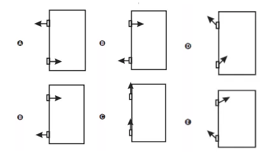

a) a Lua gira em torno da Terra com órbita elíptica e em um dos focos dessa órbita está o centro de massa da Terra.
b) a Lua gira em torno da Terra com órbita circular e o centro de massa da Terra está no centro dessa órbita.
c) a Terra e a Lua giram em torno de um ponto comum, o centro de massa do sistema Terra-Lua, localizado no interior da Terra.
d) a Terra e a Lua giram em torno de um ponto comum, o centro de massa do sistema Terra=Lua,, localizado no meio da distância entre os centros de massa da Terra e da Lua.
e) a Terra e a Lua giram em torno de um ponto comum, o centro de massa do sistema Terra-Lua, localizado no interior da Lua.
a) No centro do furo.
b) Na lateral da porca.
c) Na parte superior da porca.
d) Na parte inferior da porca.
e) Na borda interna da porca.